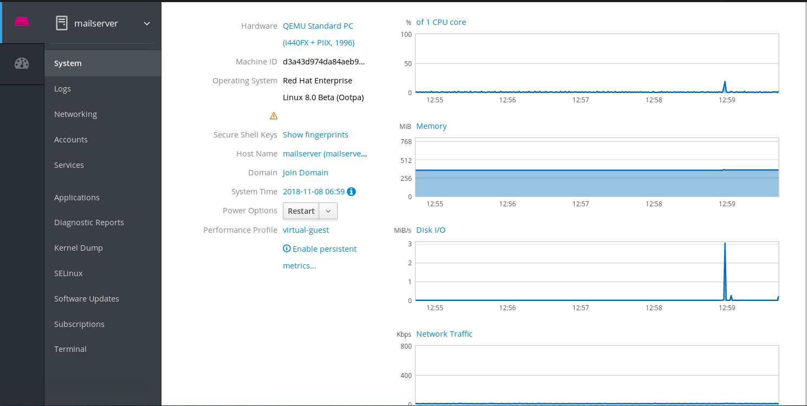

The following sections aim to help you install the web console in Red Hat Enterprise Linux 8 and open the web console in your browser. You will also learn how to add remote hosts and monitor them in the RHEL 8 web console.
- Installed Red Hat Enterprise Linux 8.
- Enabled networking.
Registered system with appropriate subscription attached.
To obtain subscription, see link: Managing subscriptions in the web console.
The RHEL web console is a Red Hat Enterprise Linux 8 web-based interface designed for managing and monitoring your local system, as well as Linux servers located in your network environment.

The RHEL web console enables you a wide range of administration tasks, including:
- Managing services
- Managing user accounts
- Managing and monitoring system services
- Configuring network interfaces and firewall
- Reviewing system logs
- Managing virtual machines
- Creating diagnostic reports
- Setting kernel dump configuration
- Configuring SELinux
- Updating software
- Managing system subscriptions
The RHEL web console uses the same system APIs as you would in a terminal, and actions performed in a terminal are immediately reflected in the RHEL web console.
You can monitor the logs of systems in the network environment, as well as their performance, displayed as graphs. In addition, you can change the settings directly in the web console or through the terminal.
Red Hat Enterprise Linux 8 includes the RHEL 8 web console installed by default in many installation variants. If this is not the case on your system, install the Cockpit package and set up the cockpit.socket service to enable the RHEL 8 web console.
Procedure
Install the
cockpitpackage:$ sudo yum install cockpit
Optionally, enable and start the cockpit.socket service, which runs a web server. This step is necessary, if you need to connect to the system through the web console.
$ sudo systemctl enable --now cockpit.socket
To verify the previous installation and configuration, you can open the web console.
If you are using a custom firewall profile, you need to add the cockpit service to firewalld to open port 9090 in the firewall:
$ sudo firewall-cmd --add-service=cockpit --permanent $ firewall-cmd --reload
The following describes the first login to the RHEL web console using a system user name and password.
Prerequisites
Use one of the following browsers for opening the web console:
- Mozilla Firefox 52 and later
- Google Chrome 57 and later
- Microsoft Edge 16 and later
System user account credentials
The RHEL web console uses a specific PAM stack located at
/etc/pam.d/cockpit. Authentication with PAM allows you to log in with the user name and password of any local account on the system.
Procedure
Open the web console in your web browser:
-
Locally:
https://localhost:9090 -
Remotely with the server’s hostname:
https://example.com:9090 Remotely with the server’s IP address:
https://192.0.2.2:9090If you use a self-signed certificate, the browser issues a warning. Check the certificate and accept the security exception to proceed with the login.
The console loads a certificate from the
/etc/cockpit/ws-certs.ddirectory and uses the last file with a.certextension in alphabetical order. To avoid having to grant security exceptions, install a certificate signed by a certificate authority (CA).
-
Locally:
In the login screen, enter your system user name and password.

Optionally, click the Reuse my password for privileged tasks option.
If the user account you are using to log in has sudo privileges, this makes it possible to perform privileged tasks in the web console, such as installing software or configuring SELinux.
- Click Log In.
After successful authentication, the RHEL web console interface opens.